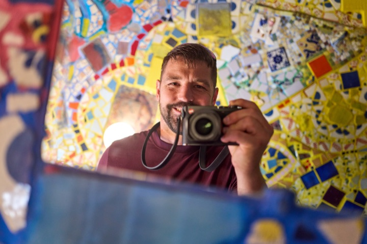

In AI, context is everything. Building it is what I do best.
A model is only as good as what you put in front of it: your data, your operations, the knowledge your team already has. That's the part I've spent sixteen years learning from the inside, and the part I now engineer into production AI a business can trust.
This is the whole path I build, from your raw data to an answer the model can be trusted on.

Context → model. Every stage of it, I've built in production:
Sourcesdocs · DBs · APIs
Ingestpipelines
Extractstructured data
Chunk + embedvectors
Retrievehybrid search
Agentsorchestration
16 yrs
engineer · multiple industries
1
AI platform, built end to end
3
open-source tools published
2
on PyPI · installable today
What I've built
Atlas — a production AI operations platform
Going to production
Atlas is the AI operations platform I built for my employer's warehouse-automation division. Winning a job used to mean chasing spreadsheets, shared folders, and email threads. Atlas brings all of it into one place: the opportunity, the site photos, the estimate, the vendor quotes, the proposal, and the milestones, on a dashboard the team can slice.
Claude works inside it: answering questions from the team's own records, reading incoming customer documents and pulling out the numbers people used to retype by hand, and researching accounts overnight. It's 44 tables and 205 API routes behind a React front end, and it runs as one app against one database. No microservices, no queues, no containers.
Why it matters: it replaces a stack of disconnected tools with one platform on one workflow, so the team moves faster, gets it right more often, and can finally see the whole picture. I originated it, built it solo from architecture through deployment, demoed it to the company president, and it's on its way to production.
Nova is the assistant I built to work alongside me. Specialized agents (one that researches, one that builds, and a separate critic that reviews the work before I see it) run under a single orchestrator with persistent memory.
It runs on tools I built and published. RepoLens is how it finds anything across my repos. Arcanum, a separate library of 124 researched field guides, is what it consults instead of guessing or running the same web searches over and over.
Why it matters: it's how I keep several projects moving at once without dropping any of them. Every night it audits each repo and files what it finds, so in the morning the work comes to me instead of me going looking for it.
Answer five questions and get back a ranked list of jobs that actually fit you, each one linking straight to the company's own application page. It scores every posting against your answers, merges the same job across sources into one entry, and remembers what you've seen or applied to, so you're only ever looking at what's new.
Behind it, JobFitr keeps a live picture of the market by pulling from several sources at once (its own Job-Radar engine, USAJOBS, and Google Jobs) and storing what it finds. A search serves that cache when it's fresh and fetches live when it isn't, with concurrent identical searches sharing one call and a daily ceiling so the free quotas never run away.
Why it matters: I built the engine first and published it, then shipped the product on top of it, running on my own server at jobfitr.app. No account, no tracking, nothing to sign up for; a stranger can use it right now.
Job-Radar is the discovery engine underneath. It finds the jobs. It polls companies' own hiring feeds directly, so a role can surface the hour it posts, and it works out which companies are worth polling in the first place, including the enterprise systems that reach hospitals, manufacturers, and government labs rather than only startups. Ten public job APIs cover everything else. A full scan of the open market takes about a minute.
Mesh — a radio network for when the cell towers don't work
Hardware + firmware
A long-range radio mesh across rural Kentucky, north-east of Louisville. LoRa nodes relay messages to each other over miles with no internet and no cell service, so friends and family still have a way to reach each other if the network goes down. One node is a solar-powered fixed repeater; the rest are portable.
Deciding where the nodes should go turned out to be the real engineering. For each proposed link I sampled 60 elevation points along the path and solved for the antenna height that would clear both the terrain and the Fresnel zone, with earth curvature accounted for. Four of the six links I wanted would have needed a 100-metre mast, so I redesigned the network around the two that were actually achievable.
Why it matters: I'd never touched RF propagation, firmware, or power budgets before this. What carried over was the habit of measuring instead of guessing: a database logging 664 nodes and 10,000+ observations, solar output tracked over time, and an antenna comparison I kept honest by swapping the new antenna into the exact tree position the old one had held, so the only variable was the antenna itself.
The Counter Program — before any of this was called AI
2022 · AutoCAD + VBA
Building a custom trade-show counter meant 4 to 12 hours of drafting, every time, by hand. I wrote a program that takes the dimensions and options as inputs and returns a finished, manufacturable 3D model. It did in about 60 seconds what took a full day, and it made the work trainable for people who had just started.
It isn't a macro. It validates every input and refuses to run on a bad one, builds the whole cabinet from primitive solids and boolean operations, and models the real materials: three-quarter-inch ply with dado joints, laminate wrapped on each face, toe-kicks, adjustable shelves that generate their own peg-hole arrays. The geometry adapts to the inputs: past a certain width it gives you two doors instead of one.
Why it matters: it's the same move I make now, just in older tools: feed it the inputs, get back a finished thing, and a day of work becomes a minute. I built a handful of tools like this across two companies over those years.
Part of how one person ships this much: I don't guess, about what to build or how. The what comes from the people who will use it. I ask the right questions until the real problem is clear, then I go build it. The how is deliberate tool choice. I use what a project actually needs, and build custom when a framework would add more weight than value. Nova's orchestration and Atlas's pipeline are custom by choice, and I work in SQL across PostgreSQL, SQLite, and DuckDB. I research a tool before I commit to it: what it's good at, where it breaks, what it costs me later. Sometimes the right one is the obvious default and sometimes it's something local or open that most people haven't picked up. And the open-source tools on this page, Revline included, all began the same way: something I built because I needed it, then published when it turned out other people did too.
My dad sat me in front of AutoCAD when I was seven. I've been chasing the next tool ever since: 3D modeling while the shop still drew in 2D, a plugin that flattened curved boat panels, then years of VBA that ended in the counter program above. Then Python, then the Power Platform, now AI. The tools keep changing. The move doesn't: find the thing that's about to matter, learn it properly, and build the system that should already exist.
Get in touch
Let's build something that makes the work smarter.
I'm looking for a senior role where building AI systems is the mandate, not something I do on top of the job. Remote, at a product company with a mission I'd believe in. Drop me a line; I read every message.